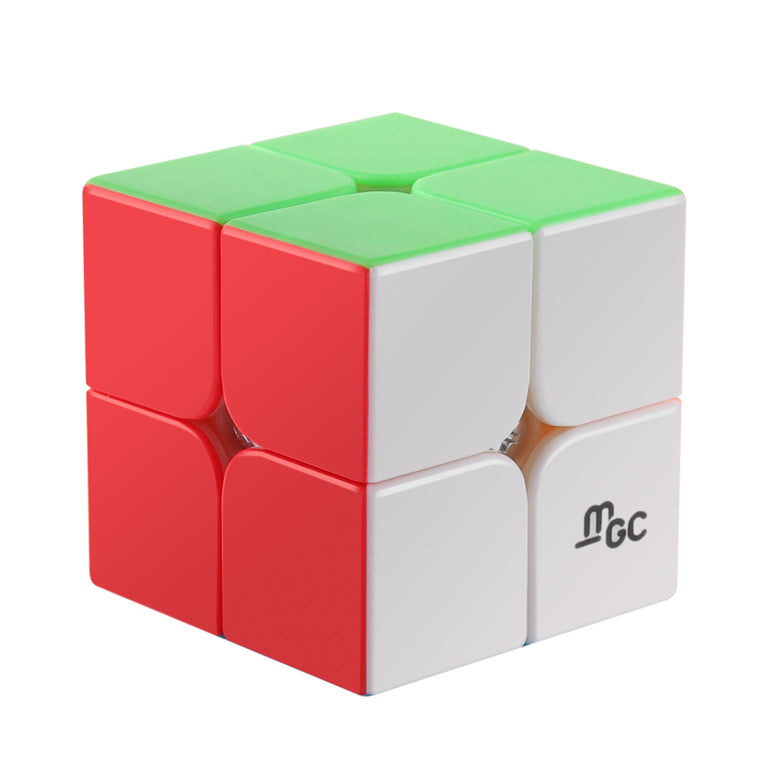
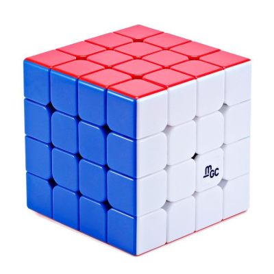
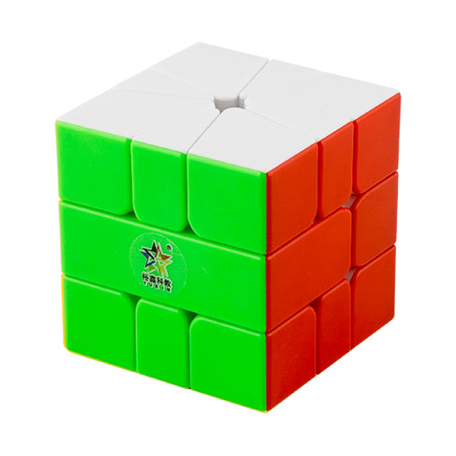
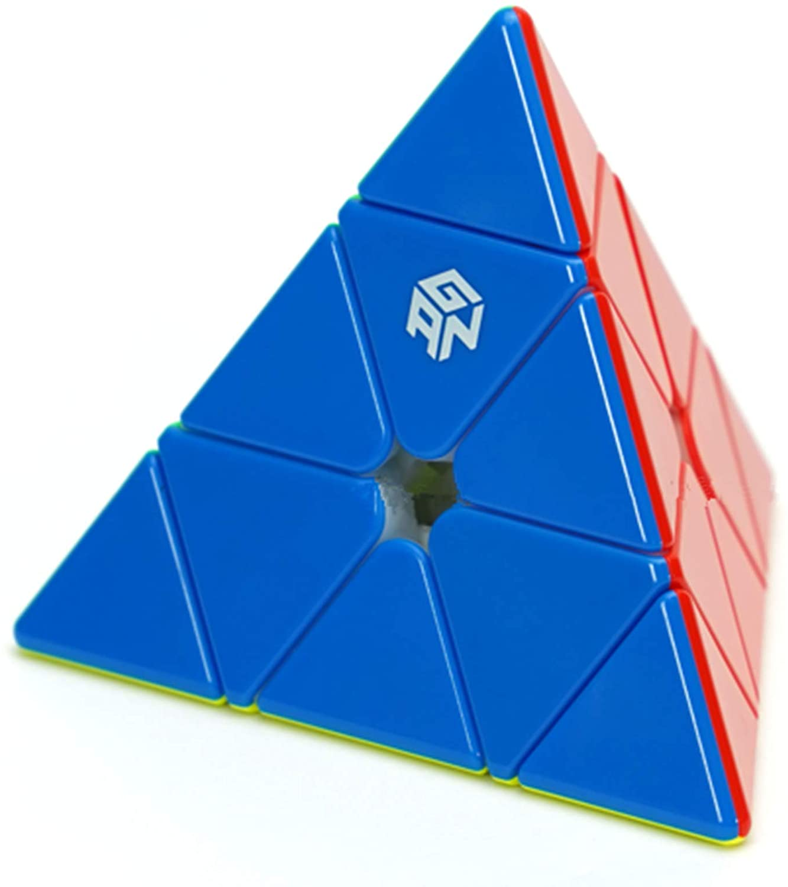

World Records (Single)
These records are in order where the fastest time is at the top, and the slowest is at the bottom. Cubing times are timed in 2 ways: a single, which is the fastest time out of 5 solves, or an ao5, where out of the 5 solves, the fastest and slowest time are omitted, and the 3 median times are averaged. This page is about the records for singles for each puzzle. The page about the world records for ao5s are found here. Additionally, ‟DNF” stands for ‟Did Not Finish” and is used when the competitor stops the timer before fully solving the puzzle.
Cubic Puzzles
2x2 Rubik's Cube

| Time |
Name |
Competition |
| 0.49 seconds |
Maciej Czapiewski |
Grudziądz Open 2016 |
| 0.51 seconds |
Sameer Aggarwal |
Puget Sound Spring 2019 |
| 0.52 seconds |
Michał Rzewuski |
Grudziądz Open 2016 |
| 0.52 seconds |
Mikoąiaj Zubowicz |
Polish Championship 2021 |
| 0.53 seconds |
Jode Brewster |
Koalafication Melbourne 2019 |
3x3 Rubik's Cube

4x4 Rubik's Cube

| Time |
Name |
Copmetition |
| 16.86 seconds |
Max Park |
CubingUSA Western Champs 2021 |
| 17.42 seconds |
Sebastian Weyer |
Danish Open 2019 |
| 17.98 seconds |
Feliks Zemdegs |
Altona Algorithms Attempt 2 2021 |
| 18.70 seconds |
Tymon Kolasiński |
LLS II Biała Podlaska 2021 |
| 19.51 seconds |
Patrick Ponce |
Tuam Re-Open Saturday 2021 |
Non-Cubic Puzzles
Square-1

| Time |
Name |
Competition |
| 4.59 seconds |
Martin Vædele Egdal |
Danish Championship 2020 |
| 4.75 seconds |
Benjamin Gottschalk |
Oklahoma Fall AM 2021 |
| 4.76 seconds |
Max Siauw |
CubingUSA Western Champs 2021 |
| 4.91 seconds |
Sameer Aggarwal |
Richmond Open B 2021 |
| 4.95 seconds |
Jackey Zheng |
Brooklyn 2019 |
Pyraminx

| Time |
Name |
Competition |
| 0.91 seconds |
Dominik Górny |
Byczy Cube Race 2018 |
| 0.97 seconds |
Rafał Waryszak |
Santa Claus Cube Race 2019 |
| 0.98 seconds |
Harsha Paladugu |
Gem City 2022 |
| 0.98 seconds |
Tymon Kolasiński |
Byczy Cube Race 2018 |
| 1.04 seconds |
Adam Jagła |
Santa Claus Cube Race 2019 |